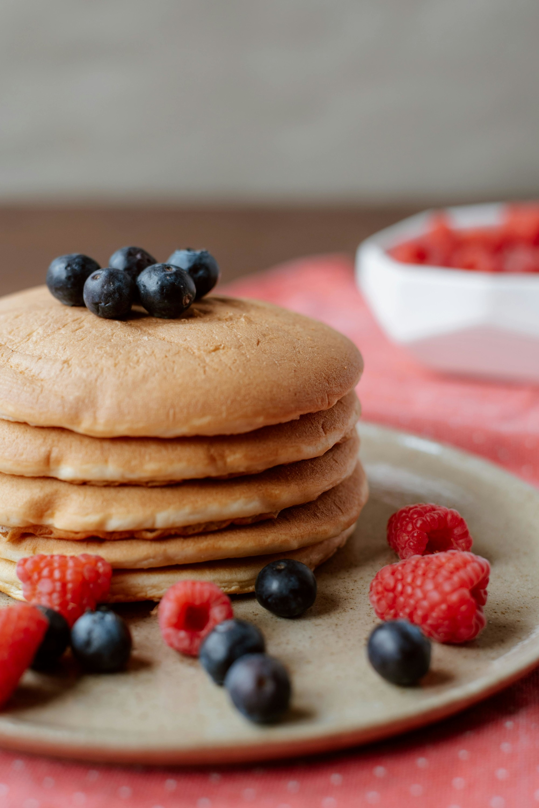

Panquecas Americanas

Ingredientes (8 Porções):
1 e 1/4 xícara (chá) de farinha de trigo
1 colher (sopa) de açúcar
3 colheres (chá) de fermento em pó
2 ovos levemente batidos
1 xícara (chá) de leite
2 colheres (sopa) de manteiga derretida
pitada de sal
óleo
Modo de Preparo: (40 Minutos)
Misture em um recipiente: a farinha, o açúcar, o fermento e o sal.
Em outro recipiente, misture os ovos, o leite e a manteiga.
Acrescente os líquidos aos secos, sem misturar em excesso.
O ponto da massa não deve ser muito líquido, deve escorrer lentamente.
Aqueça e unte a frigideira com óleo, coloque a massa no centro, cerca de 1/4 xícara por panqueca.
Vire a massa para assar do outro lado e está pronto!